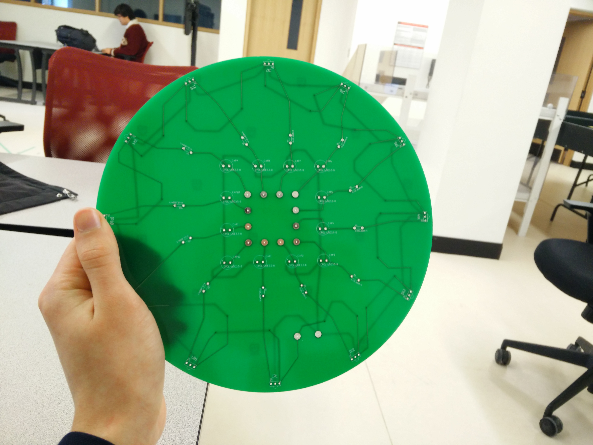
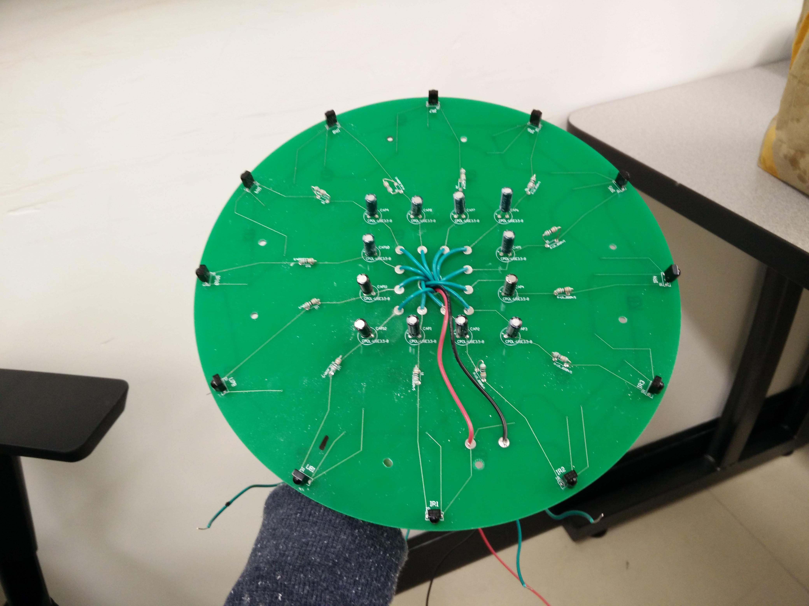
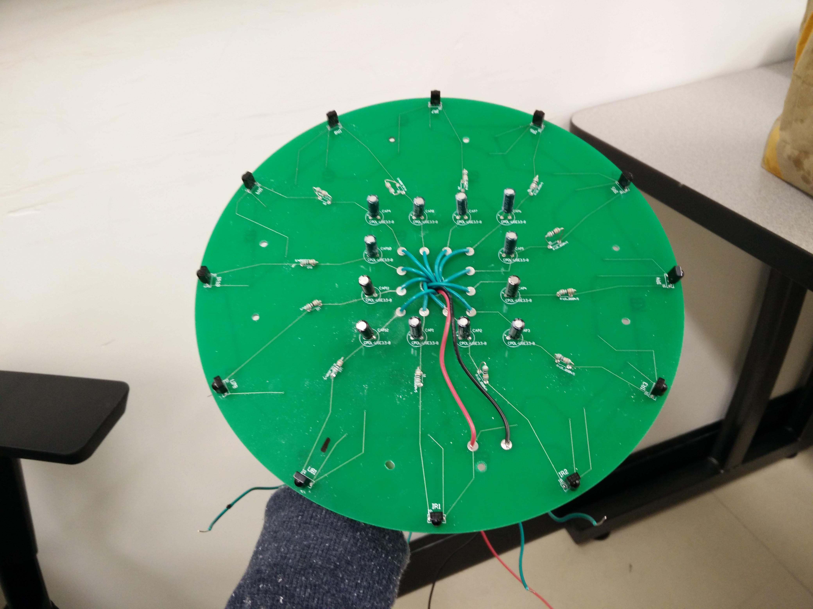
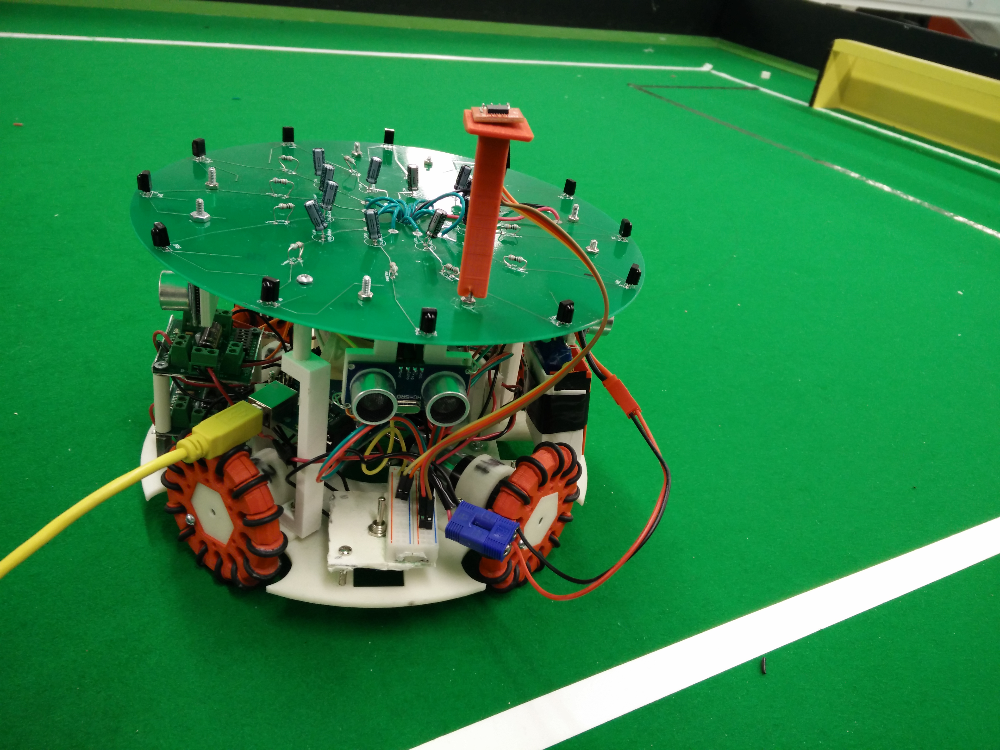

Home
2015 Build
It's not lying, you have it right here ->
2016 Build
New additions:
- Custom designed PCB for 12 IR sensors arranged in a circle
- Custom designed every non-electronic component in SolidWorks (including wheels)
- New motors with increased speed and torque
- New motor drivers
- Master/slave implementation of two Arduino boards (one for IR sensors and the other for the rest of the components)
The Printed Circuit Board

 

The New Builds


Striker (left) and defender (right)